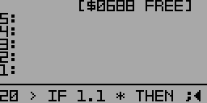

Marks the end of a conditional block begun by IF. Compile-only word
Example:
First, define a new word FOO:
: FOO DUP 20 > IF 1.1 * THEN ;
Defining FOO (partial view)
DUP makes a copy of the first item on the stack. 20 > compares it to 20. If larger than 20, the value is multiplied by 1.1. If not, the steps between IF and THEN are skipped and the value is not multiplied.